Give your AI coworker a body — direct device link (Modbus · industrial & wireless gateway) · local model (private data never leaves) · privacy storage (pull-to-own cartridge) · risk prediction · SOS + weather intelligence.
给你的 AI 同事一个身体 —— 直连设备 · 智能链接 · 本地模型计算隐私数据 · 隐私存储（可拔）· 风险预测 · SOS 急救提醒 · 气象计算 · 极端气候规避
Independent community project — not affiliated with or endorsed by Andrew Ng, deeplearning.ai, or the OpenWorker project. 独立社区项目，与 OpenWorker 官方无隶属或背书关系。
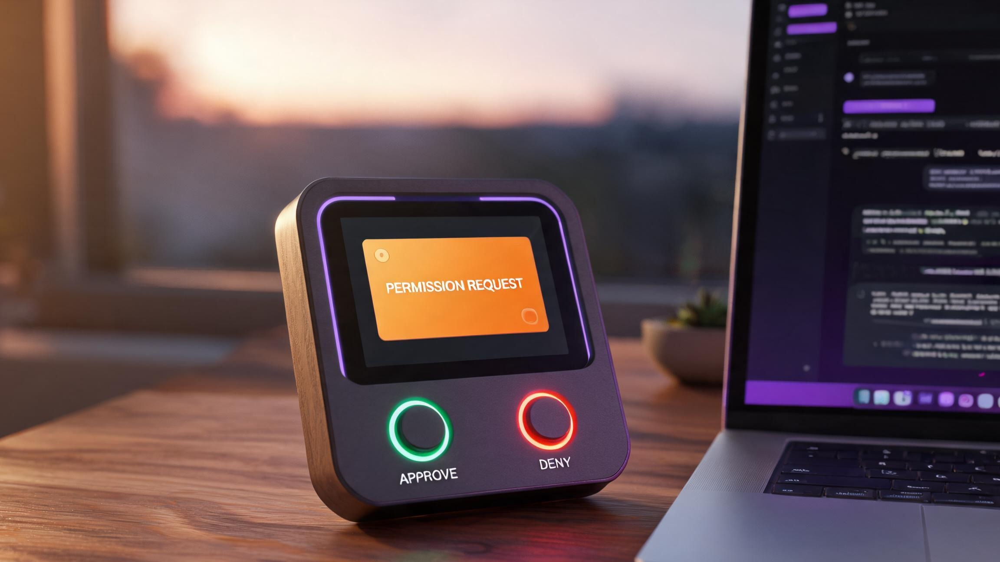
Desk console and field sensor in the same box — the hardware half of an OpenWorker deployment.
4″ screen mirrors the coworker's live todo list and progress panel. Permission requests arrive as physical cards with Approve / Deny buttons — OpenWorker's interactive mode, in hardware.
Connects to equipment directly — Modbus RTU master (RS-485 multi-drop), Modbus TCP, CAN/J1939, OBD-II, BLE, LoRa — then registers itself and every bridged device following the Model Hardware Standard pattern: standard read/write interface, auto-generated plain-language safety labels. Any MHS-compatible agent discovers it instantly.
Vibration (3-axis accelerometer), thermal (IR thermopile), current signature (CT clamp), and acoustic (MEMS mic) — plus bridging into existing fault codes on equipped machines.
The on-device NPU runs a local model — anomaly detection and small-model reasoning execute on the Deck itself. Personal and private data are computed locally: your telemetry, your logs, your history never leave the device. Fully offline by default; the optional cloud bridge is opt-in and labeled.
The modern floppy, but a vault: a removable, hardware-encrypted cartridge (up to 512 GB). Pull it out and your data physically leaves with you — nothing readable stays behind. The key lives in the cartridge, not the machine. 软盘的形态，保险库的内核。
Three risk classes per device, not just failure: failure risk (RUL curves — bearing wear, belt stretch, filter clog), safety risk (CO trends, thermal-runaway precursors, overload patterns — flagged early for human review), compliance risk (inspection and sensor-expiry deadlines). Output: a risk brief with likelihood, time window, action, evidence. It informs decisions — it never acts as a safety system.
Long-press the physical SOS button and the Deck does what a body should: strobes the status ring, sounds the piezo alarm, broadcasts an SOS card over MQTT and — where the link exists — LoRa long-range, with device location from the registry and the last-minute telemetry attached. First aid starts with someone knowing. Notification only — it does not call emergency services.
A barometer and humidity sensor feed the local model: pressure-trend, dew-point and frost-probability math runs on the Deck itself — no cloud, no forecast subscription. It cross-reads your equipment: frost probability + pivot irrigation → a pre-dawn advisory; heat index + compressor duty → a derating schedule. Official warnings still come from meteorological agencies — the Deck complements them, offline.
BLE 直连标准健康设备（血压 / 血糖 / 血氧 / 体重 / 穿戴），本地模型为每位老人建个人对照基线——评估的是"对他自己而言的偏离"，不是诊断阈值；趋势提醒推给家人，护理机器人经 MHS 接入、动作在本地评估打分。监测提醒，不做诊断。
个人智能隐私存储 + 隐私网关计算，一台设备两道闸：所有数据流经本地计算（隐私网关），所有历史落进可拔加密卡（隐私存储）——出网的只有你批准的摘要。The key lives in the disk, not in the machine. 你的数据曾经有形状、拿得起来——后来云把它吃掉了。隐私卡把形状还给你：3.5″ 软盘轮廓、装甲金属内核、512 GB 硬件加密。
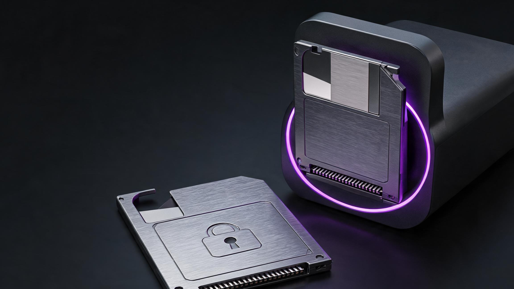
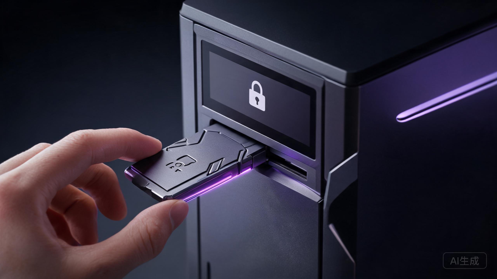
One base, one cartridge. 一件产品，两个物理件。 底座常开常连——网关、算力、闸门都在座上；插拔卡随身冷存——密钥、数据、模型授权都在卡内。Compute here. Store there. 计算在这，存储在那。 Pull the cartridge and the archive physically leaves with you; the base keeps running on 8 GB eMMC and syncs the moment you re-insert. Nothing breaks — and by design, nothing readable is left behind. 这就是"计算存储分离"做成金属而不是做成隐私政策的样子。
| 分离带来什么 | 为什么重要 |
|---|---|
| Privacy by physics | Pull the cartridge and the history physically leaves the machine — no remote wipe needed, no "trust us". 拔卡即离场。 |
| Local-model privacy | Personal and private data are computed by the on-device model — inference happens where the data lives, so nothing needs to be uploaded to be understood. |
| Independent upgrade | Swap to a bigger cartridge without touching compute; compute firmware updates never rewrite the data layer. |
| Failure isolation | A dead cartridge doesn't kill the sensor — edge detection continues, buffering to eMMC until you re-insert. |
| Audit path | Hand the cartridge (not the machine) to an auditor — the compliance trail travels without the live sensor. |
同一张卡，第二重身份：冷钱包。安全元件（SE）在卡内生成并托管密钥，私钥从诞生那一刻起就不接触任何网络——签名在卡内完成，交易经 USB/二维码进出，网络只见过签名、从没见过钥匙。桌面版的 Approve / Deny 实体键就是确认键：一笔签名 = 一次拇指按压。拔出卡，钱包就是块金属——离线是它的物理属性，不是软件选项。
冷钱包功能面向自主保管场景：自行负责助记词备份与丢失风险；本页不提供投资建议，加密资产相关功能在不同司法辖区的监管要求不同，量产发货前将按目标市场法规调整。The wallet is self-custody by design — we never hold your keys.
打烊时，盘进抽屉。今晚维护与合规记录不在任何网络上。
一整年的实验遥测，装在衬衫口袋里去合作方现场。
卖房子不卖数据——盘几个月前就走了。
哑光深灰机身、功能色点睛、无风扇被动散热 —— 桌面版陪 Agent 值守，工业版上 DIN 轨进柜，插座版插墙即用。存储介质是软盘形态的可插拔加密盘。
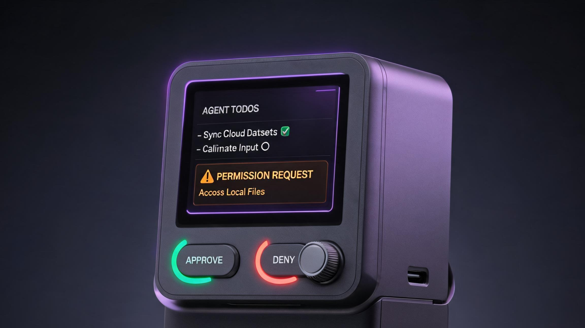
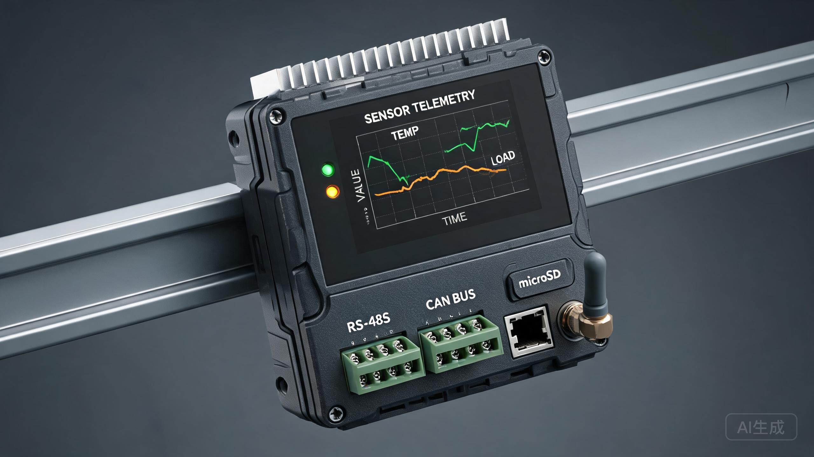
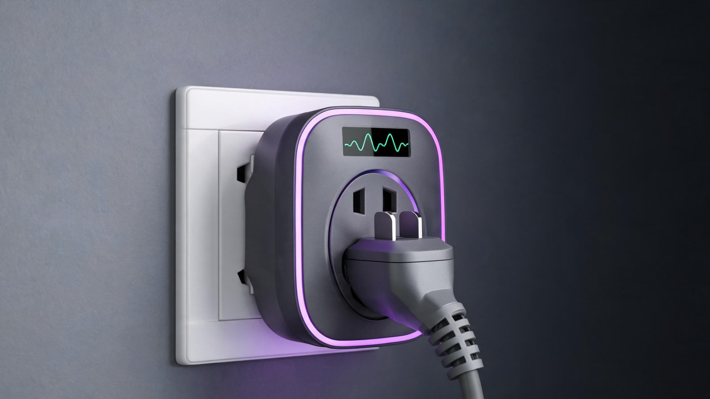
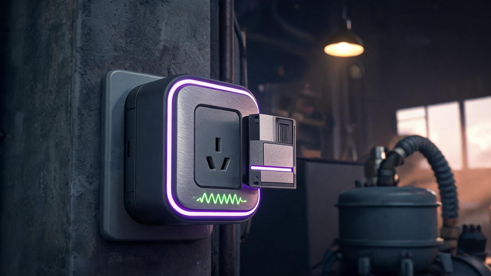
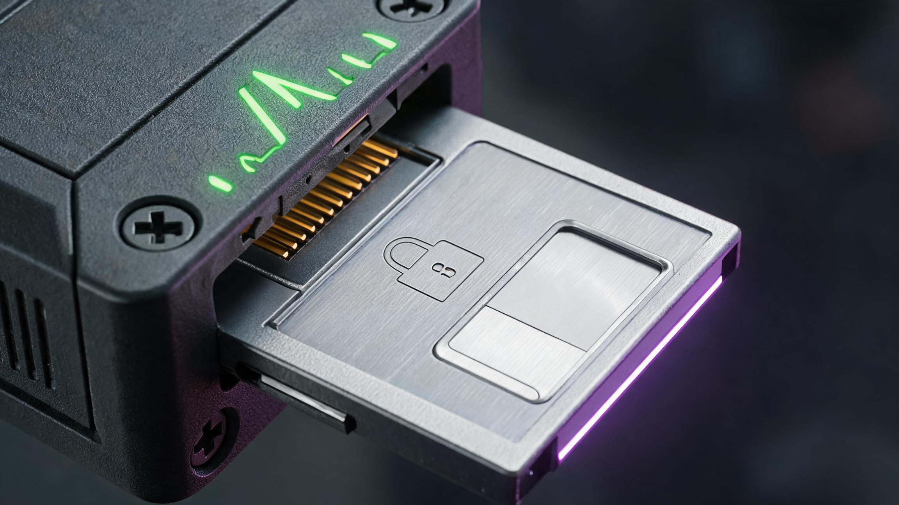
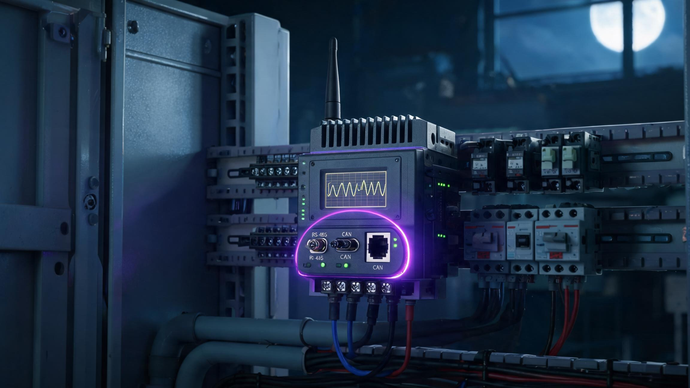
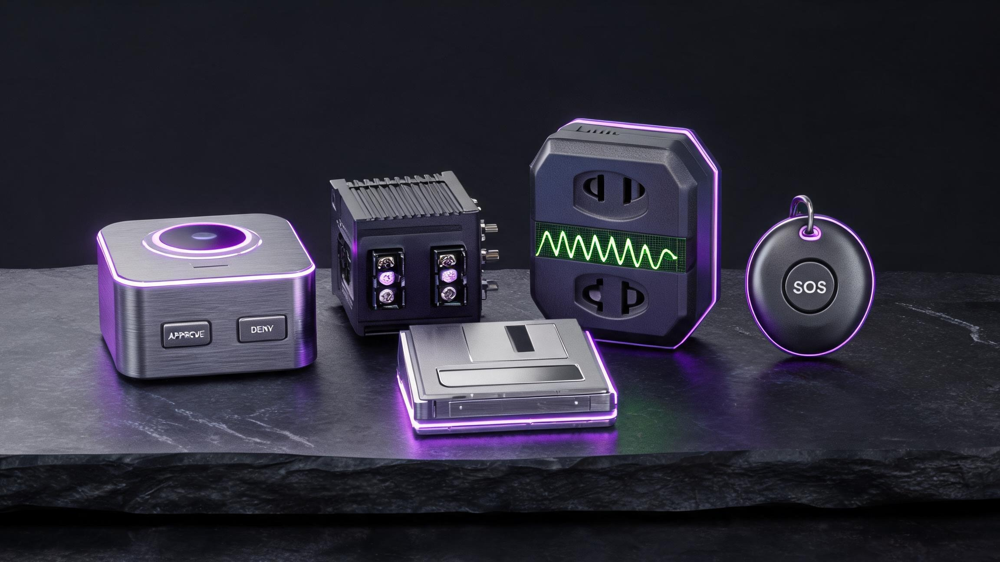
Design render, EVT-phase concept — final tooling may adjust. 设计渲染为 EVT 概念阶段，量产模具或有微调。
值得盯的机器，大多生来就没打算被盯：洗衣机没有 RS-485，热水器不会说 CAN，后屋那台空压机比 BLE 老二十岁。它们与现代世界共享的接口只有一个——插头。插座版是 Deck 生态的零接线大门：插上墙，电器插它上面，完事。不用电工，不用配协议，不用开柜子。
What a current signature knows · 电流特征知道什么。 Built-in sensing reads the power signature directly: start-current spikes, duty-cycle drift, running-current creep — compressor stall, heating-element degradation, bearing wear in the drum motor weeks before it's audible. The local model turns the waveform into risk classes on the Deck, and the socket registers itself on MHS like any other device — your agent sees "washer" on the topic tree, not "unknown plug 3".
Deck 学会你的用水节奏，在洗出温水澡之前、而不是之后，标记加热管老化。
堵转特征在傍晚 6:40 被捕获，赶在早班要用气之前。
$129 覆盖三台电器，接线少到房东永远不会发现。
入门尺寸的工业监控：空压机、除尘器、冷却泵——三个插座，一份点名到机的早报。柜内配 DIN 轨工业版，同一个 Agent 同时读现场总线和插拔舰队。
以上为典型场景示例——检测能力为 EVT 阶段设计目标，实际效果以量产实测为准，不构成性能保证。
插座版不只是"会看电流的插线板"——它是 Deck 生态里最小的消息中枢：MQTT broker 直接在插座里跑，插上墙它就是家里的网关底座。再把隐私计算存储盘从侧面卡口推入，插座当场升级为一台完整的隐私计算存储节点——夜班值守、轨迹归档、证据包生成，全部发生在墙上那一格里，不需要桌面版到场。
计算与存储分离做到插座级：网关（插座）永久值守，加密盘即插即拔——搬家的拔盘，换盘的拔盘，墙上那格永远在线。
没有桌面版？插座 + 存储盘就是最小可用的家庭隐私计算节点：守护吊牌的轨迹回连它，电器遥测落盘到它，SOS 证据包也从它生成。
三个插座各守一台电器，共享同一块盘的归档空间；将来加桌面版，插座无缝并入 MHS 设备树——投资从 $43 一格起步，不浪费任何一级。
存储盘作为整机原厂配件随生态销售、不单独面向第三方提供加密接口——单一事实来源的归档，也是合规上最干净的形态。
插座里跑的是一套按"墙上值守"这个职责重新裁剪的边缘消息基础设施——broker 在本地、遗言机制、盘座互认握手。以下为 EVT 设计目标，量产参数 DVT 认证后写定：
| 模块 | 插座网关底座 · EVT 目标规格 |
|---|---|
| 电流采样 | 1 kHz 波形采样 · 有功功率 ±1% · 特征窗口 200 ms 滚动——启动尖峰、占空比漂移、运行电流爬升都在窗口里 |
| 边缘计算 | 双核 MCU @ 240 MHz + 0.1 TOPS 级微型 NPU——电流特征学习、夜班值守、事件归档三类轻模型本地跑 |
| 北向链路 | Wi-Fi 4（2.4 GHz）到自家 broker 或家庭 Deck · mDNS 同网段自动发现，上电即入 MHS 设备树 |
| 近场接入 | BLE 5.2——守护吊牌到家回连、BLE 传感档案直读，不经任何外部服务 |
| 本地环回 | 插座内传感到话题订阅 < 50 ms，全程不出局域网——夜班值守的判断延迟以毫秒计 |
| 存储盘接口 | 侧卡口高速连接器 · AES-256 握手 · 支持热插拔：拔盘瞬间遥测转环形缓冲，插回自动补齐归档 |
| 通流能力 | 直通插孔 EVT 目标 16 A / 250 V——认证定稿前，高功率阻性负载（取暖器等）不在支持范围 |
默认本地闭环：broker 只监听局域网，北向桥接是显式开关（opt-in）——插座不知道你的外网密码，它只认识你允许它认识的 broker。
电流特征不是拿阈值卡出来的——插座上电后先学后判：头 7 天是"只看不说"的基线学习期，之后每个周期输出风险分类。整条流水线跑在插座自己的 NPU 上：
舰队模式 NTP-lite 同步 ±20 ms：三个插座的事件时间轴可对齐——"热水器 06:02:14 启动失败"与"空压机 06:02:31 电流跌落"能被关联成一次电压骤降事件。
存储盘插在其中一格：其余插座经本地 MQTT 把归档遥测中继给"持盘座"，统一落盘——拔盘时全舰队历史一起走，不留分散的副本。
学习期事件只记不报：基线未成前，插座不产生警报——杜绝新装第一周的误报轰炸。
eMMC 热数据 30 天（事件+摘要）· 存储盘冷归档全量轨迹与原始特征——盘在时自动分层，盘不在时热层照常转。
The cheapest seat in the ecosystem. 生态里最便宜的座位。 Not every machine deserves a DIN-rail gateway — some machines just need someone to notice when they start limping. That's the whole job — 以插座形态提供整套网关协议栈，量产零售价另定，认证参数 DVT 后写定。
智能硬件的提醒逻辑，装进 Deck 的身体里：一句话 SOS、一环灯光、一声鸣响、一条远距离广播；一台不用联网就算天气的本地气象台，替你的机器看天吃饭。
长按 SOS 实体键 1.5 秒：状态灯环爆闪、压电蜂鸣响起——这是它自己的嗓子。然后是广播：SOS 卡片带设备位置（MHS 注册表）和最近一分钟遥测，经 MQTT 推给你指定的联系人、手机和 Agent；现场没有 Wi-Fi 时，走 LoRa 长距信道向数公里内的接收端喊话。误触取消：再按一次，3 秒内撤回。
灯环爆闪 + 90 dB 蜂鸣，车间另一头也能看见听见。它自己的嗓子先亮出来。
SOS 卡片：设备位置 + 最近一分钟遥测 + 域标签，推送到你指定的联系人与 Agent 订阅的话题。
没有 Wi-Fi 的现场：868/915 MHz 长距信道向数公里内的 LoRa 接收端喊话——大棚、泵站、山谷牧场。
独居作业场景：SOS 触发后无确认，按预设序列升级——先家人，后备用联系人。有人知道，是急救的第一步。
不订云、不装 App：气压计 + 温湿度传感器喂给本地模型，气压趋势、露点、霜冻概率全在 Deck 上算。极端气候规避不是报天气——是把天气读进你的设备清单：每台机器一条应对动作。
霜冻概率 × 灌溉枢轴 → 凌晨预灌建议：水护苗。提前 6 小时进早报，不用你半夜盯天。
热指数 × 空压机负载 → 降容排程：高温时段减载运行，避开热故障高发窗口。
气压骤降率 → 户外设备防护清单：盖发电机、收工具、加固棚顶——清单式提醒，逐项确认。
连雨湿度 × 泵站状态 → 排水泵试机提醒：汛前验证每台泵打得着火。水位传感可经 1-Wire 挂入。
SOS 为通知与警报功能，不直接呼叫急救服务、非认证生命安全或医疗设备——真实紧急情况请先拨打当地急救电话。气象推算为本地信息性参考，官方预警永远以气象部门为准，Deck 是补充不是替代。
养老垂直的完整闭环：健康数据对接（BLE 标准设备直连）→ 对照模型（每位老人自己的基线）→ 模型评估（家人反馈闭环）→ 机器人对接（护理机器人同标准接入、本地训练评估）。四段全在本地——数据不出门，判断留给人。
老人不用装 App、不用注册账号：血压计、血糖仪、血氧仪、体重秤、穿戴设备走蓝牙标准健康档案（GATT），Deck 做中枢直读，测完数据自动落本地加密卡——密钥在盘里，健康史跟着盘走。
| 设备 | 蓝牙标准档案 | Deck 做什么 |
|---|---|---|
| 血压计 | Blood Pressure Profile | 收缩 / 舒张 / 脉搏入库，个人基线滚动更新 |
| 血糖仪 | Glucose Profile | 测量值 + 时间戳，趋势偏离提醒 |
| 血氧仪 | Pulse Oximeter Profile | SpO₂ 连续读数，超个人范围提醒 |
| 体重秤 | Weight Scale Profile | 体重 / BMI 趋势，急变提醒 |
| 穿戴设备 | 厂商服务 / GATT | 步数、心率、睡眠——活动节律学习 |
不做人群诊断——模型学的是"这位老人自己的正常"：7 天滚动基线覆盖血压晨峰规律、活动节律、睡眠模式。评估 = 当前读数对个人基线的偏离度：今天的收缩压比他自己的基线高 18% → 提醒家人；不跟诊断阈值比，不输出"高血压"——那个词属于医生。
家人对每条提醒确认 / 忽略——灵敏度自校准，误报逐周下降。评估的不是老人，是模型自己。
每周健康摘要经 MQTT 推送到家人订阅的话题：趋势、用药依从性、异常次数、模型灵敏度变化。
时间触发灯环 + 蜂鸣 + 屏幕卡，确认打卡；漏服次数进周报——不唠叨，但记得。
健康数据本地计算：周报只有家人订阅的话题收到，云端永远拿不到原始读数。老人搬去哪家，拔盘带走。
护理机器人经 MHS 像任何设备一样注册接入——同一套读写纪律与安全标签；ROS / ROS2 机器人经内置 MQTT broker 挂上话题树 deck/robot/{id}/{action}。训练数据与评估打分都不出院：
养老功能为监测与提醒：非医疗器械、不做诊断、不使用人群诊断阈值——异常是否就医由家人与医生判断。护理机器人的物理辅助动作必须经实体确认键：评估给分数，闸门不给人。机器人训练数据留在本地加密卡，不外传。
插卡即用的无屏守护吊牌，一个硬件四类人：小学生（上学路上）、养老院老人（每人一枚）、户外作业者（农场与工地）、独自徒步的旅行者（进山的独行者）。电话模式只通预设联系人，SOS 一键定位呼出，轨迹回到家里的 Deck——不是某家厂商的云。
只能拨打家长 / 家属预设的号码——爸妈、爷爷奶奶、班主任在名单里，陌生人进不来。免提外放，孩子不用记号码，老人不用学触屏。
nano-SIM 插入即通（4G Cat.1bis 全网通），开号即守护——不用绑定谁的手机，不用装 App，不用注册账号。
没有屏幕，就没有短视频、没有游戏、没有"再看五分钟"。上学的路上、养老院的日常里，只有通话和定位该有的事。
长按 SOS：当前位置 + 最近轨迹即刻成卡，推送到监护人序列并循环呼叫直至确认；家里的 Deck 同步灯环爆闪、蜂鸣提醒。误触 3 秒内再按取消。
儿童手表的默认是孩子位置进厂商云。这里的默认是：GPS + WiFi + 基站三重定位，经蜂窝或到家 BLE 回连家里的 Deck，轨迹落本地加密卡——密钥在盘里，拔盘带走，厂商云拿不到佩戴者的位置。
独步进山的旅行者要的不是一块带屏幕的户外手表——屏幕费电、看表分心、失温时手抖得按不动。吊牌挂在背包肩带上：全天轨迹自动记录，进无信号区前最后已知位置、气压骤变的风暴预警、坠线即 SOS——救援要的三样东西（在哪、什么情况、什么时候开始）在失联前已经发出去了。
每 5 分钟一次轨迹点：进山前家人能看实时位置；信号消失后，最后已知位置 + 计划路线已经在家里 Deck 的加密卡上——搜救队要的起点坐标，不用等家属回忆。
内置气压计持续测压：3 小时内降压超过阈值 → 蜂鸣 + 免提语音提醒"风暴概率高，请评估下撤路线"——进山天气突变的第一信号，不靠手机信号。
无屏意味着功耗极低：一次充电待机 7 天、连续轨迹 72 小时——覆盖一条两天的独步线还有余量，低温环境下比任何带屏设备撑得久。
预设"每 N 小时按一次平安键"——超时未按且无移动，吊牌自动触发 SOS 序列循环呼叫。摔昏迷也报得出位置：这是独行者最后的一道网。
无屏的意义在规格表上看得最清楚：没有屏幕耗电，没有背光抢功率，剩下的每一毫安都花在定位、测压、守时上。以下为 EVT 设计目标：
| 模块 | 守护吊牌 · 独步配置 EVT 目标 |
|---|---|
| 定位 | GNSS 多星座（GPS / 北斗 / GLONASS）· 冷启动 ~30 s · A-GPS 蜂窝辅助秒级修复 · WiFi/基站三重兜底——峡谷与林线之下仍有最后已知位置 |
| 轨迹存储 | 本机闪存 30 天轨迹（5 min 间隔）· 到家 BLE 5.2 回连同步进加密卡——卡上才是长档案，吊牌只做循环缓冲 |
| 气压风暴算法 | ±1.5 Pa 气压计 · 1 Hz 连续采样 · 滑动 3 h 窗口降压超 4 hPa 触发预警——比体感早约半小时到一小时看到天气转向 |
| 平安键 | 间隔 1–24 h 可配 · 超时未按 + 加速度计静止判定 → 自动 SOS 升级；误按 3 s 内可取消，避免虚惊一条线 |
| 电池 | 900 mAh 锂聚合物 · 待机 7 天 / 连续轨迹 72 h / 低温降额曲线按 −10 °C 标定 · 磁吸充电座，零接口设计 |
| 防护 | IP67 防尘水浸 · −20 至 60 °C 宽温——雨雪、失温边缘、暴晒车顶都在值守范围 |
| SOS 呼叫 | 长按 1.5 s 触发 · 循环呼叫监护人序列直至确认 · 位置卡片附带最后 10 个轨迹点与剩余电量 |
| 射频 | 4G Cat.1bis 全网通（2G 漫游兜底）· 免提通话单麦克风降噪 · BLE 5.2 到家回连 |
技术细节的边界与正文一致：轨迹与位置数据只落家庭加密卡，不进厂商云；气压预警是信息性参考，官方气象预警永远优先；户外 SOS 通知监护人序列而非专业搜救，定位精度以当地卫星与基站信号为准，不能替代卫星电话与专业户外装备。
户外设备真正的设计题不是"续航几天"，而是电量见底时先放弃什么。吊牌的降级是排好序的：保命功能永远最后关断——每一步降级时，SOS 与平安键保持满血，直到电池耗尽的最后一刻：
加速度计判静止时自动放宽：原地扎营、午休时轨迹降频，移动即恢复——同一格电量，多守一个白天。
三轴加速度计冲击检测（>3 g 瞬态）+ 后续 60 s 静止判定 → 自动触发 SOS 序列；比平安键超时快得多——摔下去的那一刻就开始工作。
轨迹点差分编码：30 天 5 min 间隔约 8600 点，压缩后 <200 KB 闪存占用——闪存大头留给事件记录，轨迹只是轻装。
气压换算高度与 GNSS 海拔互验：漂移超 80 m 标记低可信点——救援时轨迹里标出哪些位置是"确定可依赖的"。
急救的黄金信息是"在哪、什么情况、从什么时候开始"。SOS 触发的瞬间，这些已经就位：
位置卡片实时推送——户外（山谷牧场、工地）、养老院（楼层房间到床号）两类救援场景，找人不用先打电话描述。
预设医疗备注（血型、过敏、慢病）随 SOS 附带——急救人员到场前就知道关键信息。信息由家属填写，Deck 本地存储。
从触发到每位监护人确认的时刻自动记录——救援复盘与理赔都用得上。
第一个联系人未接，自动转向下一位，循环直至有人按下确认——独居老人与户外单人作业的安全网。
理赔最贵的是证据。SOS 之后，Deck 已经把它整理好：理赔证据包——事件时间线、位置轨迹、遥测摘要、监护确认记录，从本地加密卡一键导出为结构化文件（PDF/JSON），保险要的摘要在里面，原始数据留在盘里。预付保险计划与持牌保险机构合作推进中：监管审批通过后随守护档位附赠首年保障；审批未落地则等值折让——绝不承诺尚未成立的赔付。
守护终端为通信、定位与提醒：SOS 通知监护人序列而非急救服务，真实紧急情况先打当地急救电话；救援背景卡信息由家属自行填写、本地存储。未成年人个人信息遵循监护人同意与最小必要原则（PIPL），蜂窝与射频合规（SRRC 型号核准、进网许可）量产前完成；预付保险计划以持牌机构合作为前提，审批未落地不构成保障承诺。
手术有人盯——设备没人盯。Deck 进医疗设施只做两件事：设备健康与环境合规：不碰患者回路、不做临床判断，术中被动只读，写操作物理排队到术后。
灭菌器周期与批次记录、麻醉机与呼吸机运行时长、无影灯镇流器、手术电梯——Modbus RTU/TCP 直读，维护周期自动递减，到期进风险预测。
温湿度、压差、HEPA 滤芯寿命、空气质量——1-Wire / BLE 传感挂入，合规记录自动落加密卡，审计跟盘走，拔盘即带走。
设备维护状态 × 环境合规记录 → 月度设施评估报告，审计格式一键导出——卫健委检查与 JCI 评审前的自检底稿。
手术进行中被动只读：任何写操作（校准 / 复位）排队到术后，实体确认键物理上锁——设备维护永远给手术让路。
医疗设施场景为设备与环境监测：不接入患者回路、不做临床判断、术中只读不写；医疗环境电磁兼容（IEC 60601-1-2）为 DVT 目标，合规记录的效力以当地监管与评审机构认定为准。
人身保障 × 隐私计算 × 按权授权：从传感到理赔一条链，每一环里原始数据都留在本地加密卡，保险机构看到的只有你授权过的摘要。
风险分数在本地模型算好，授权摘要送核保——原始健康数据不出盘。摘要可验证（签名 + 时间戳），伪造不了也偷不走。
核保之后的持续监测变成提醒：跌倒风险、用药偏离、极端天气——出险率降下来，风险双向受益，不与任何具体保费挂钩。
SOS 时间线、遥测摘要、监护确认自动成包（PDF/JSON）——保险拿摘要，原始数据留盘里，理赔周期从扯皮变成对表。
授权按粒度授予：某项数据、某家机构、某个期限。撤回即断流，链路每次授权都有审计记录——数据主权不是口号，是按键。
保险公司有自己的核保模型，各类公司有自己的评估模型——它们都想碰你的数据。互联层的答案是反过来：数据不动，模型动。机构的私有模型经合规审批后接入，在 Deck 的隔离沙箱里跑，读到的只有授权卡允许的那部分；离开的只有签名后的推理输出。而这一切的前提是一道硬件级的闸门——强制授权：
七类模型，同一条路。 过审 → 沙箱 → 授权字段 → 签名输出——私有模型、通用模型、本地算力，全部走同一道闸门：
| 模型类别 | 读什么（= 授权卡字段） | 返回什么 | 算力在哪 |
|---|---|---|---|
| 保险 · 核保 | 健康基线摘要 · 设备风险分级 · 环境合规记录 | 核保决定（签名输出） | 机构沙箱 |
| 养老 · 基线对照 | BLE 健康数据 · 老人个人基线 | 趋势卡给家人 · 提请人工复核 | 本地 NPU |
| 户外 · 轨迹风险 | GNSS 轨迹 · 气压趋势 · 里程 | 路线风险提示 | 本地 NPU |
| 机械 · 故障诊断 | 振动 / 电流 / 热 / 声特征 · 故障码 | 诊断结论 + RUL | 本地 NPU |
| 消防 · 前兆检测 | CO 趋势 · 热失控前兆 · 过载模式 | 检测标记 + 通知指定联系人 | 本地 NPU |
| 气象 · 本地推算 | 气压 · 湿度 · 温度 · 露点 | 设备关联行动清单 | 本地 NPU |
| 通用 · LLM 推理 | 授权的任务上下文 · 注册表摘要 | 签名推理输出 | 沙箱（本地 / 机构） |
算力在网关侧：外部模型接入即获得算力——在沙箱内用本地 NPU 推理，模型到数据端来算，数据不出卡。The model comes to the compute; the data never travels to the model.
持牌核保模型接入沙箱：从授权摘要与授权字段做风险评估——它评估得了风险，复制不走数据。
不只保险：健康管理、居家安全、设备维保——任何机构的模型同一套闸门接入，同一套审计留痕。
授权检查在安全元件里执行，不在可绕过的软件层——拔掉确认键的授权链路，模型层一点脾气都没有。
授权卡撤回的瞬间起，该模型的后续调用全部拒绝——不是"下次生效"，是"这一刻生效"。
手术场景的保险全链路：评的是设施就绪（设备与环境），不是患者手术风险；记录的是中立证据（带时间戳签名的日志），不是裁决。前后两段分开看：
保险全链路以持牌保险机构合作与监管审批为前提：不承诺核保结果、保费水平或赔付；健康数据用于核保需按 PIPL 敏感个人信息规则单独明示同意；预付保险计划审批未落地时等值折让。本链路是数据准备与授权基础设施，不是保险产品。私有模型互联同样是合规后的产物：机构模型接入以该机构资质审查与监管要求满足为前提，沙箱与强制授权闸门是接入的技术前置条件——未过审的模型、无授权的调用，在架构上就不存在通路。手术保险链不做患者手术风险评估、不做临床判断、不裁决医疗纠纷——责任认定归仲裁机构、司法鉴定与持牌保险。
Your computer sleeps. The machines don't.
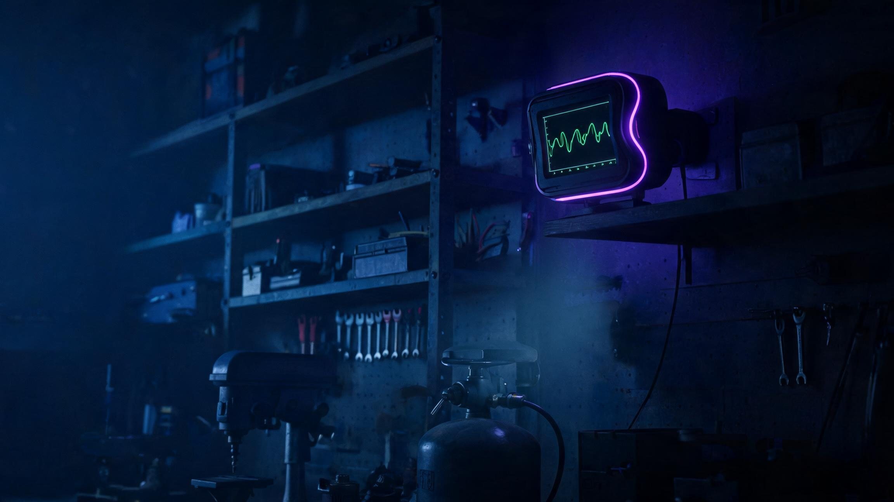
Pairs with the open-source Hardware Repair Companion coworker: the Deck senses, the agent diagnoses — telemetry as evidence, manuals and parts from public sources, a maintenance log per device.
Legacy fieldbus on one side, MHS on the other. The Deck speaks the equipment's own protocols — directly, no integrator in the middle. Agent 永远不需要学厂商 SDK。
| 链路 | 直连方式 | 典型设备 |
|---|---|---|
| Modbus RTU | RS-485 主站 · 多点总线（32 台 · 单元号 1–247）直读寄存器与线圈 | 变频器 · PLC · 电表 · 灌溉阀 · 枢轴灌溉 |
| Modbus TCP | 以太网 / Wi-Fi 客户端 · 同一套寄存器，无需转接硬件 | 楼宇自控 · 电力监控 · 工业 PC |
| CAN 2.0B / J1939 | 总线直挂 250/500 kbit/s · PGN 解码 | 拖拉机 · 收割机 · 发动机 · 农具 |
| OBD-II | 转接线 · 标准 PID 直读 | 发电机 · 车辆 · 紧凑型拖拉机 |
| BLE 5.2 | 中枢角色 · GATT 传感档案与厂商服务 | 电动工具电池 · BLE 传感器仪表 |
| LoRa 868/915 MHz | Sub-GHz 无线网关 · 数百米至公里级 | 远端大棚 · 粮仓 · 水塔 · 泵站 |
| 1-Wire | 直挂数字温度探头链 | 冷库 · 锅炉房 · 温度链 |
Southbound speaks fieldbus to machines; northbound speaks MQTT to everything else. Every bridged device mirrors onto a topic tree — dashboards, automations and other agents subscribe instead of polling.
| 消息层 | 能力 | 对接什么 |
|---|---|---|
| MQTT broker（内置） | 本地 broker（MQTT 3.1.1 / 5.0）—— 每台桥接设备自动映射为话题树 deck/{device}/{register}，遥测即发布 | Node-RED · Home Assistant · Grafana · SCADA |
| MHS ↔ MQTT 映射 | MHS 设备树镜像到话题：Agent 订阅即感知，写指令经权限卡闸门 | 任何 MQTT 客户端的 Agent / 脚本 / 自动化 |
| 云桥接（可选） | TLS 桥接到你自己的 broker —— 默认关闭，开启即在页面上标注 | Azure IoT · AWS IoT · 阿里云 · EMQX · 自建 |
| 离线缓冲 | 断网期间消息落加密卡，重连补发（QoS 1 · store-and-forward） | 弱网现场：大棚 · 泵站 · 移动设备 |
No protocol island survives: the agent sees one MHS device tree — the Deck translates underneath. Equipment with no digital interface at all falls back to the four contactless sensing modalities.
The Deck works across the same nine domains the Hardware Repair Companion covers — with the compliance boundaries to match.
| 模块 | 规格 |
|---|---|
| SoC | Dual-core Cortex-A7 @ 1.2 GHz + 0.5 TOPS NPU — runs the local model |
| Memory / Storage | 256 MB RAM · 8 GB eMMC buffer · removable encrypted cartridge up to 512 GB |
| Security | Hardware AES cartridge encryption · secure element · key lives in the cartridge · nothing readable without it |
| Display | 4″ LCD — todo/progress panel, permission cards, risk briefs |
| Controls | Approve / Deny buttons · rotary encoder · status ring |
| Sensors | 3-axis accelerometer · IR thermopile · CT clamp (0–100 A) · MEMS mic · barometer (±1.5 Pa) · RH/temp — weather inference on-device |
| Emergency | SOS button (long-press, cancel within 3 s) · status-ring strobe · piezo buzzer (~90 dB) · MQTT + LoRa SOS broadcast |
| Ports | CAN 2.0B / J1939 · RS-485 (Modbus RTU multi-drop) · 10/100M Ethernet (Modbus TCP) · 1-Wire · OBD-II via adapter |
| Radios | BLE 5.2 · Wi-Fi 4 · LoRa 868/915 MHz (optional) |
| Message layer | Built-in MQTT broker (3.1.1 / 5.0) · MHS↔topic mapping · optional TLS cloud bridge · QoS 1 store-and-forward |
| Power | USB-C PD · optional passive PoE |
| Enclosure | Desktop + IP65 field edition (−20 to 60 °C) + DIN-rail industrial edition + socket edition (smart-plug, pass-through) |
| Firmware | Open source, MIT — MHS-compatible registration |
同一套协议栈与 MHS 内核，四种形态覆盖从桌面到配电柜。所有形态共享隐私存储卡与实体确认键。定价与购买渠道将在量产临近时公布。
4″ Agent 面板 · 传感器套件 · 桌面支架 —— 会思考的同事坐镇的桌面
35mm DIN 导轨 · RS-485/CAN 端子 · RJ45 · 散热片 —— 装进配电柜的守夜人
智能插座形态 · 零接线点名到机 —— 洗衣机 · 热水器 · 空压机的最便宜入场券
无屏 · nano-SIM · 三重定位 · SOS 实体键 —— 位置回家里 Deck，永不进厂商云
配件生态：隐私存储卡（AES-256）· 授权卡 · 传感器扩展 —— 计算与存储分离，盘是你的，机器只是插座。
Not medical advice. Not a certified safety system. Concept renders throughout — EVT-phase industrial design, final tooling may adjust. 本页非医疗建议，非认证安全系统；全页渲染为 EVT 概念阶段。
No. The Deck works standalone. MHS-compatibility means any MHS-native agent can use it — OpenWorker, Claude, or whatever comes next.
No. The local model runs sensing, anomaly detection, risk prediction and storage — personal and private data are computed on the Deck itself and never uploaded by default. An optional cloud bridge exists for fleet dashboards, opt-in and labeled.
Nothing breaks. Compute keeps running — sensing, the local model and protocol bridging continue, with telemetry buffering to the 8 GB eMMC. Your history travels with the cartridge: hardware-encrypted, the key lives in the cartridge itself, unreadable without it. Re-insert and the buffer syncs into the archive.
Three layers. Compute: a local model does the inference on-device, so understanding your data never requires uploading it. Storage: the archive sits on a removable hardware-encrypted cartridge — pull it and the data physically leaves the machine. Network: offline by default, the fleet bridge is opt-in.
The four contactless modalities — vibration, thermal, current, acoustic — work on any machine with power.
No. It reads standard BLE health devices, compares readings against the elder's own rolling baseline, and sends trend reminders to family. It never diagnoses, never applies diagnostic thresholds, and is not a certified medical device — anything clinical goes to a doctor.
Robots join via MHS or the built-in MQTT broker like any device. Interaction history — sensors, health baseline, robot action logs — stays on the encrypted cartridge as local training data, and robot actions are scored against the elder's baseline plus family feedback. Physical assistance actions require the physical Approve button: a human stays in the loop, always.
No. The Deck prepares authorized, verifiable digests and assembles claim evidence — it is not an insurance product, and we are not an insurer. Underwriting, pricing and payouts stay with licensed partners, subject to regulatory approval; if the prepaid plan's approvals don't land, the plan falls back to equivalent credit.
No. Pre-op it evaluates facility readiness — sterilizer batches, anesthesia-machine maintenance, temperature, humidity, pressure differential — never the patient's surgical risk. Intra-op it records a passive, signed, timestamped timeline; post-op it tracks equipment cycles and environment compliance plus authorized recovery digests. For medical disputes, that evidence chain is available to arbitration bodies and forensic experts — the Deck provides records, never verdicts.
The Deck monitors equipment and environment only: sterilizer cycles, anesthesia run-hours, temperature, humidity, pressure differential, HEPA lifetime. It is never connected to patient circuits, makes no clinical judgments, and during surgery it is read-only — writes queue behind the physical button until the procedure ends.
The cartridge's AES-256 encryption and the secure element make this an export-controlled item, and we've completed the export review. We never ship to embargoed destinations (Belarus, Cuba, Iran, North Korea, Russia, Sudan, Syria, occupied Ukrainian regions). A second tier (Vietnam, Indonesia, Venezuela, Kazakhstan) ships only after import-side approvals — we'll contact affected customers. Everywhere else the Deck ships under mass-market treatment: US self-classification with annual reporting, the Cryptography Law consumer carve-out for China, mass-market waivers in Hong Kong. Customers in China mainland: shipping is unrestricted, but the wallet feature is presented there as local key custody per mainland regulations.
The cartridge's secure element generates and stores keys offline and signs inside the disk — self-custody by design, market-specific posture before shipping. In jurisdictions that restrict crypto-related promotion (notably mainland China), the same hardware is described as a local key custody and offline signing module — the feature set is identical, the marketing language adapts. The device itself is a storage and signing tool; it never transacts, exchanges, or prices anything.
Both, through MHS: reads are always safe; writes (resets, calibration, actuation) require explicit approval — on the physical buttons by default.
Because they solve a different problem. A Modbus gateway from an established industrial vendor (e.g. Moxa's MGate series) lists around $400+, and Chinese IIoT edge gateways (e.g. USR's edge series) run ¥1,099 — excellent boxes, but they translate protocols for SCADA and clouds. The Deck covers the same field protocols in one box (Modbus RTU/TCP · CAN/J1939 · OBD-II · BLE · LoRa) plus what gateways don't do: MHS-native registration an AI agent can operate, a desk console with physical Approve/Deny, four-modality sensing, a local model computing your private data on-device, an encrypted pull-to-own storage cartridge, and three-class risk prediction. 不是更便宜的网关，是不同品类：Agent 能亲手操作的网关。
No. In medical, clinic and dental settings the Deck monitors equipment rooms and duty cycles only — never patient-connected circuits. Fire-safety monitoring is record-keeping, never a replacement for certified inspection.
Custom business-agent creator · 代运营 / 品牌管理背景 · builds task-specific agents on open platforms. Author of the Amazon Product Scout and Hardware Repair Companion coworkers for OpenWorker.
This project is the hardware half of that work — the agent that thinks, and the desk it sits at. 会思考的 Agent，和它坐镇的桌面。
github.com/Hdhaidong